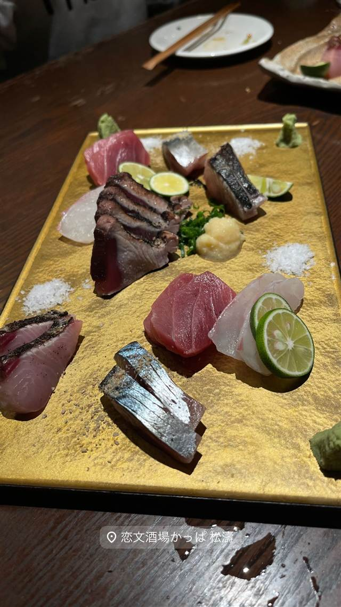

居酒屋 · 居酒屋 · 松濤
恋文酒場かっぱ 松濤（旧店名 酒楼カタカムナ）
かつての恋文横丁にちなむ店名、丁寧な仕込みの創作和食
恋文酒場かっぱ 松濤
旧店名「酒楼カタカムナ」から「恋文酒場かっぱ 松濤」へとリニューアルした居酒屋。店名は渋谷にかつて実在した恋文の代筆街「恋文横丁」にちなみ、タトゥーの入ったスタッフの外見とは裏腹に、丁寧な仕込みのクリエイティブ和食を提供するギャップが人気を呼んでいる。
TRIVIA
豆知識
- 店名「恋文酒場」は、渋谷にかつてあった「恋文横丁（すずらん通り）」に由来する。
- 旧店名は「酒楼カタカムナ」。約4年前にカジュアル居酒屋からクリエイティブ和食の店へリニューアルした。
REVIEWS
世間の評判
3.34食べログ
創作料理とおしゃれな雰囲気
- トロタク巻きなど創作料理は何を頼んでも美味しいと評価する声が多い
- 和のテイストを活かしたおしゃれで居心地の良い雰囲気を評価する声が多い
- 料理の提供が遅いことや価格が見合わないと不満を感じる人もいる
- 日本酒やカクテルなどドリンクの種類の豊富さを評価する声もある
食べログ 口コミ182件
| 看板 | 刺身・創作和食 |
|---|---|
| こだわり | 見た目にとらわれない、丁寧な仕込みのクリエイティブ和食を提供。 |
| どこから | 都心 |
| 予算 | 夜 ¥3,000～¥3,999 |
| 定休日 | 無休（年末年始12/31～1/3を除く） |
| 場所 | 神泉 東京都渋谷区松濤 |
| メモ | スタッフにタトゥーを入れた人が多く、月商1000万円を達成する繁盛店。 |
食べたもの：刺身
NEARBY
近い店・同じ系統の店
-
 居酒屋 平良市街地
居酒家 でいりぐち(本店)
泡盛はすべて宮古島産の古酒、食べログ百名店に選出
夜 ¥5,000～¥5,999
居酒屋 平良市街地
居酒家 でいりぐち(本店)
泡盛はすべて宮古島産の古酒、食べログ百名店に選出
夜 ¥5,000～¥5,999
-
 居酒屋 大崎広小路
酒場それがし
添加物を使わない純米酒だけを扱う日本酒専門の酒場
夜 ¥4,000～¥4,999
居酒屋 大崎広小路
酒場それがし
添加物を使わない純米酒だけを扱う日本酒専門の酒場
夜 ¥4,000～¥4,999
-
 居酒屋 中目黒
つなぎや 中目黒
前沢産牛の牛タンを炙り・煮込み・アヒージョで味わう
夜 ¥6,000～¥7,999
居酒屋 中目黒
つなぎや 中目黒
前沢産牛の牛タンを炙り・煮込み・アヒージョで味わう
夜 ¥6,000～¥7,999
-
 居酒屋 鶯谷駅
大衆鳥酒場 鳥椿 鶯谷朝顔通り店
サイコロの出目で値段が変わるチンチロリンハイボール
昼 ¥2,000～¥2,999 夜 ¥3,000～¥3,999
居酒屋 鶯谷駅
大衆鳥酒場 鳥椿 鶯谷朝顔通り店
サイコロの出目で値段が変わるチンチロリンハイボール
昼 ¥2,000～¥2,999 夜 ¥3,000～¥3,999
-
 居酒屋 恵比寿駅
酒場シナトラ 恵比寿店
銅製の大鍋で仕込むたまり醤油ベースの名物肉豆腐
夜 ¥5,000～¥5,999
居酒屋 恵比寿駅
酒場シナトラ 恵比寿店
銅製の大鍋で仕込むたまり醤油ベースの名物肉豆腐
夜 ¥5,000～¥5,999
-
 居酒屋 恵比寿
恵比寿 スタンド富士
5日がかりで仕上げるスープの中華そばと肉盛り飯
昼 ～¥999 夜 ¥2,000～¥2,999
居酒屋 恵比寿
恵比寿 スタンド富士
5日がかりで仕上げるスープの中華そばと肉盛り飯
昼 ～¥999 夜 ¥2,000～¥2,999